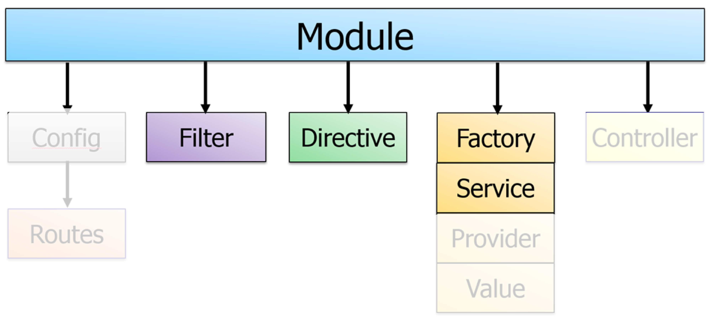
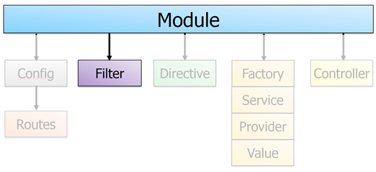
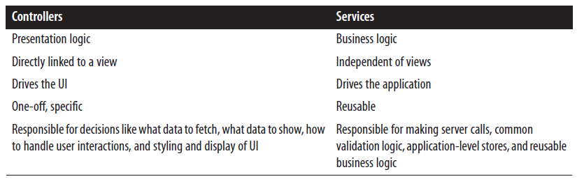

We have looked at Modules, Controllers and Routes. Today we will look at Filters, Directives Factory and Service

Angular - The bits and pieces that
make up an application
Filters
A filter formats the value of an expression for display to the user. They can be used in view templates, controllers or services and it is easy to define your own filter (Angular Filters).
Examples (built-in filters):
| Value | Formatted Value | filter |
|---|---|---|
| 2012-12-22 ⇾ | {{"2012-12-22" | date : 'dd-M-yyyy'}} | {{"2012-12-22" | date : 'dd-M-yyyy'}} |
| 45.50 ⇾ | {{45.50 | currency}} | {{45.50 | currency }} |
| Hello World | {{'Hello World' | uppercase}} | {{'Hello World' | uppercase }} |
Filters Continued
Applying filters to expressions in view templates using the following syntax:
{{ expression | filter }}Example: The markup
{{ 12 | currency }} formats the number 12 as a currency using the currency
filter
Chaining filters (apply a filter to the result of another filter:
{{ expression | filter1 | filter2 | ... }}Filters may have argumets
{{ expression | filter:argument1:argument2:...}}Example: The markup
{{ 1234 | number:2 }} formats the number 1234 with 2 decimal points
using the number filter.
The resulting value is 1,234.00Custom Filters
Angular exposes a simple API for creating a filter.
Just as you would declare a controller with:

app.controller(‘myCtrl', function(){});
you can create a new filter by appending:
app.filter(‘filterName', function(){}) to your Angular app.
Anatomy of an Angular Filter
// The first parameter is the name of the filter
// The second is a function that will return another functio
// which is the actual filter
app.filter('myFilter', function() {
// First parameter is the data we will work on (filter).
// Optionally we can pass in multiple other parameters (like for the Date-filter)
return function(input, optional1, optional2) {
var output;
// Do filter work here
return output;
}
});
User Defined Filters
Directives - introduction
The HTML Compiler
Angular's HTML compiler allows us to teach the browser new HTML syntax. The compiler allows us to attach behavior to any HTML element or attribute and even create new HTML elements or attributes with custom behavior.
Angular calls these behavior extensions Directives
Angular comes with a set of these directives built-in, like:
- ngApp
- ngController
- ngRepeat
- ngModel
- ngDisable
- ......
A Custom Directive Example
A directive which makes any element draggable
directive('draggable', function($document) {
return function(scope, element, attr) {
var startX = 0, startY = 0, x = 0, y = 0;
element.css({
position: 'relative',
cursor: 'pointer'
});
element.on('mousedown', function(event) {
// Prevent default dragging of selected content
event.preventDefault();
startX = event.screenX - x;
startY = event.screenY - y;
$document.on('mousemove', mousemove);
$document.on('mouseup', mouseup);
});
function mousemove(event) {
y = event.screenY - startY;
x = event.screenX - startX;
element.css({
top: y + 'px',
left: x + 'px'
});
}
function mouseup() {
$document.off('mousemove', mousemove);
$document.off('mouseup', mouseup);
}
};
});
<image draggable src="images/angularjs.png"></image>
Writing our own Directives
AngularJS refers to User Defined Directives as:
Teaching HTML New Tricks
We can do really cool things with User Defined Directives, but understanding all the options is one of the toughest things to learn with Angular.
We will only scratch the surface of what can be done
First Directive
Template-expanding directive
var app = angular.module("directiveDemo1",[]);
app.directive("linkToFronter",function(){
return {
restrict: 'E',
template : '<a href="https://fronter.com/cphbusiness/">Link to Fronter </a>'
//Unless the template is small, put it into its own HTML file and load it
//via the templateUrl option
//templateUrl: 'my-customer.html
};
});
...
<body ng-app="directiveDemo1">
<link-to-fronter></link-to-fronter>
</body>
→
Matching Directives
Note how linkToFronter in the JavaScript (case-sensitive) matches link-to-fronter
in the HTML
(case-insensitive)
This can be done in other ways, but this way is considered Best
Practice
The Restrict Options
var app = angular.module("directiveDemo1",[]);
app.directive("linkToFronter",function(){
return {
restrict: 'E',
template :templateUrl: 'my-customer.html
};
});
'A' - only matches attribute name, i.e:<div my-directive></div>
'E' - only matches element name, i.e: <my-directive></my-directive>
'C' - only matches class name, i.e: <div class="my-directive>
'AEC' - matches either attribute or element or class
nameDirective Properties
Common properites used when creating Custom Directives
angular.module('moduleName')
.directive('myDirective', function () {
return {
restrict: 'EA', //E = element, A = attribute, C = class, M = comment
scope: {//Child Scope/Isolate Scope
// @ reads the attribute value,
// = provides two-way binding
// & works with functions
title: '@'
},
template: '<div>{{myVal}}</div>',
templateUrl: 'mytemplate.html',
controller: controllerFunction, //Custom controller
link: function ($scope, element, attrs) { } //For DOM manipulation
}
});
Common Directive Properties
| Property | Description |
| restrict | Determines where a directive can be used (element, attribute, CSS class, or comment). |
| scope | Used to create a new child scope or an isolate scope. |
| template | Defines the content that should be output from the directive. Can include HTML, data binding expressions, and even other directives. |
| templateUrl | Provides the path to the template that should be used by the directive. It can optionally contain a DOM element id when templates are defined in <script> tags. |
| controller | Used to define the controller that will be associated with the directive template. |
| link | Function used for DOM manipulation tasks. |
Passing Data Into a Directive
Directives - the Link-function
Directives provide several different ways to render HTML, collect data, etc. If the Directive does a lot of DOM manipulation, using the link function makes sense.
link: function($scope, $element, $attrs) {}
The link function gets passed the scope of the element, the HTML DOM element (as a JQuery element) the directive is operating on, and all the attributes on the element as strings.
User Defined Directives
Services
Angular services are functions or objects that can hold behavior or state across our application and are wired together using dependency injection (DI).
Use services to organize and share code across your app
Angular services are:
- Lazily instantiated – Angular only instantiates a service when an application component depends on it.
- Singletons – Each component dependent on a service gets a reference to the single instance generated by the service factory.
- Usable by any other component such as controllers, directives, filters, and even other services
Creating Services
In the applications we develop, we will use controllers as well as services
Both controllers and services fullfill a certain need in our applications as outlined below:
Creating Services
Services can be created in several ways:
- With the Factory
- With the Service
- With the Provider
The seed provides simple Examples of the first two:
https://github.com/Lars-m/semesterSeedFall2015.git

Services and Factories
At the level of JavaScript knowledge we reach this semester it really does'nt matter which strategy you choose. Pick one and stick to that, most of the exerciser will suggest that you write a factory
app.service('MyService', function () {
this.message = "Hello from (service) service
this.getMessage = function () {
return this.message;
};
});
Here you add your function(s) to the this reference.
A service turns into a Constructor function so AngularJS will call new on the service-function to create an instance of the type/class.
Using the (service) Service
app.controller('AppCtrl', function (MyService) {
var self = this;
self.msgFromService = MyService.getMessage();
});
app.factory('MyFactory', function () {
message = "Message from (factory) service";
return {
getMessage: function () {
return message;
}
};
});
Here you return an object with one or more functions
If a function in your return-object refer to local variables (message in the example)the function will become a closure, and the variable will continue to be available in the function
Using the (factory) Service
app.controller('AppCtrl', function (MyFactory) {
var self = this;
self.msgFromFactory = MyFactory.getMessage();
});
Services with $http requests
Refactoring $http code into a service (returning the Promise)
angular.module('customersApp')
.factory('dataFactory', ['$http', function($http) {
var urlBase = '/api/customers';
var dataFactory = {};
dataFactory.getCustomers = function () {
return $http.get(urlBase); WHAT DOES THIS LINE RETURN?
};
// ....
Using the factory
app.controller('custCtrl', ['$scope', 'dataFactory', function ($scope, dataFactory) {
$scope.status;
$scope.customers;
dataFactory.getCustomers()
.then(function (response) {
$scope.customers = response.data;
}, function (error) {
$scope.status = 'Unable to load customer data: ' + error.message;
});
} // ....
Services with $http requests + Events
Refactoring $http code into a service (publishing return data via events)
Suggested Pattern
angular.module('app').controller('TheCtrl', function($scope, NotifyingService) {
// ... stuff ...
NotifyingService.subscribe($scope, function somethingChanged() {
// Handle notification
});
});
angular.module('app').factory('NotifyingService', function($rootScope) {
return {
subscribe: function(scope, callback) {
var handler = $rootScope.$on('notifying-service-event', callback);
scope.$on('$destroy', handler);
},
notify: function() {
$rootScope.$emit('notifying-service-event');
}
};
});
References
For Creating Services, Handling Dependencies and Testing Services, use:
https://docs.angularjs.org/guide/services
For a great article on using a service or a factory to encapsulate a REST API read:
http://weblogs.asp.net/dwahlin/using-an-angularjs-factory-to-interact-with-a-restful-service
Rest of today; Exercises :-)